域名解析系统
@DNS- DNS - Domain Name System
- 名称服务器：负责将域名解析为对应的IP地址
翻译官
通信录
- 是互联网的一项服务。将域名和 IP 地址相互映射的一个分布式数据库，以便 更方便 地访问互联网
好记
好维护：域名变动少；IP地址变动大
- 解决 IP 地址复杂难以记忆的问题，存储并完成自己所管辖范围内主机的域名到 IP 地址的映射
- 适用 UDP 协议；协议端口：53
- 基本过程如下
- 查看浏览器本地缓存
- 查看本地主机文件
- 向运营商 ISP 指定的 DNS 服务器发起查询
- 向各级 DNS 服务器查询
- 将查询结果返回给请求主机
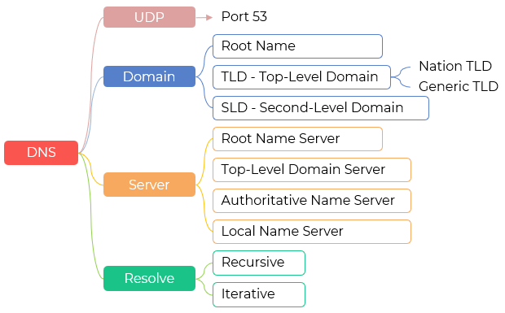
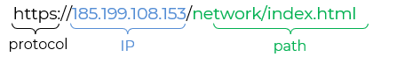
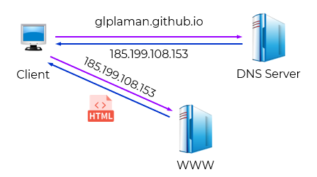
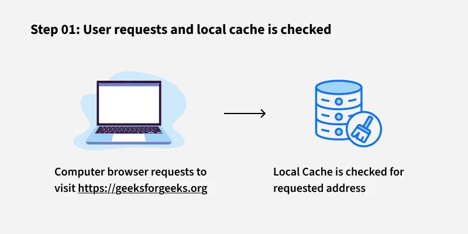
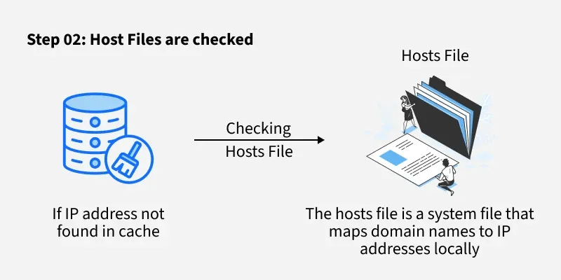
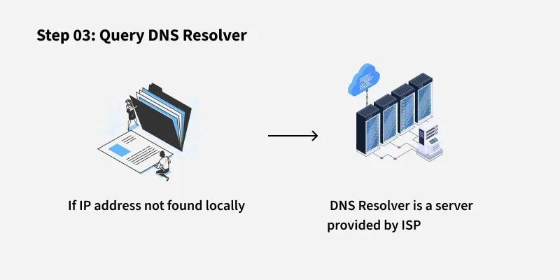
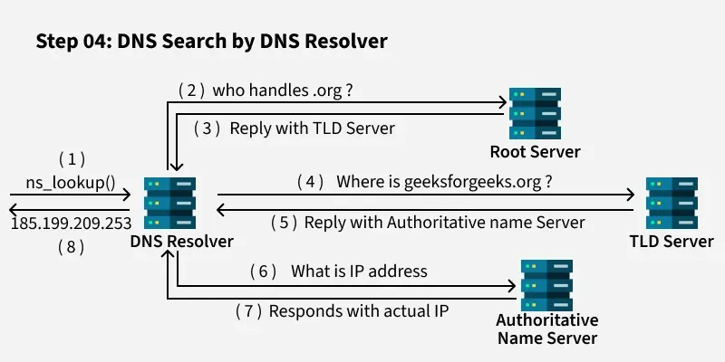
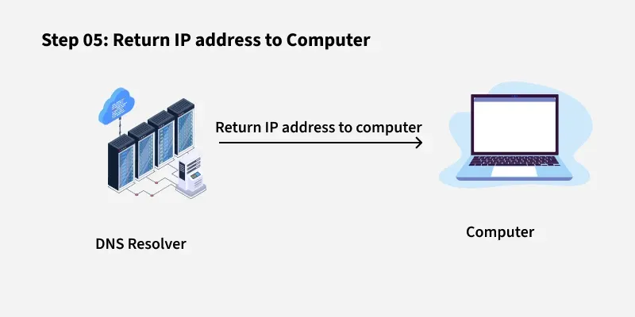
域名服务器 Server
- 根域名服务器 Root Name Server
- 共13个域名；区域不均衡
- 截至 2024年10月，
全球共有 1,733 个根服务器实例（即物理部署点）在运行
中国境内（包括中国大陆、香港、澳门、台湾地区）共部署了 约 50 个根服务器实例
内地约有 30–35 个，覆盖北京、上海、广州、杭州、武汉、西安等多个城市
- 知道所有顶级域名服务器的域名和对应的IP地址
- 它 不直接解析 IP地址，而是告诉对方应该找哪个顶级域名服务器
- 顶级域名服务器 Top-Level Domain Server
- 负责管理在该顶级域名服务器注册的所有二级域名
- 收到 DNS 查询请求时，就给出相应的权限域名服务器的IP地址
- 它总是知道去哪里找权限域名服务器
- 权限域名服务器 Authoritative Name Server
- 负责一个区 zone 的域名服务
- 每台主机都必须在授权域名服务器处登记
- 实际上，许多域名服务器都同时充当本地域名服务器和授权域名服务器
- 授权域名服务器 总能 将其管辖的主机名转换为该主机的IP地址
- 不在辖区的，向上级请求
- 本地域名服务器 Local Name Server
- 本地域名服务器对域名系统非常重要。
- 也称默认域名服务器； 距离用户较近
- 每个因特网服务提供者ISP， 或一所大学，甚至一所大学中的各个系，都可以拥有一个本地域名服务器
- 当一台主机发出DNS查询请求时，这个查询请求报文就发送给该主机的本地域名服务器
- 如果查不到，再去询问其他的域名服务器
| 分类 | IP | 域名 | 运营 |
|---|---|---|---|
| A 根 | 198.41.0.4 | A.root-servers.net | 美国加利福尼亚州洛杉矶 |
| B 根 | 192.228.79.201 | B.root-servers.net | 美国弗吉尼亚州马里兰 |
| C 根 | 192.33.4.12 | C.root-servers.net | 美国纽约州纽约市 |
| D 根 | 199.7.91.13 | D.root-servers.net | 美国新泽西州贝德明斯特 |
| E 根 | 192.203.230.10 | E.root-servers.net | 瑞典斯德哥尔摩 |
| F 根 | 192.5.5.241 | F.root-servers.net | 美国加利福尼亚州棕榈泉 |
| G 根 | 192.112.36.4 | G.root-servers.net | 荷兰阿姆斯特丹 |
| H 根 | 198.97.190.53 | H.root-servers.net | 美国华盛顿州西雅图 |
| I 根 | 192.36.148.17 | I.root-servers.net | 瑞士日内瓦 |
| J 根 | 192.58.128.30 | J.root-servers.net | 日本东京 |
| K 根 | 193.0.14.129 | K.root-servers.net | 美国密歇根州兰辛 |
| L 根 | 199.7.83.42 | L.root-servers.net | 美国加利福尼亚州埃尔塞贡多 |
| M 根 | 202.12.27.33 | M.root-servers.net | 美国弗吉尼亚州达勒姆 |
根服务器 → 返回 TLD 服务器地址
TLD 服务器 → 返回权威服务器地址
权威服务器 → 返回最终 IP
域名 Domain Name
- 域名是互联网上用于唯一标识主机或网络服务的层次化逻辑名称
- 它是 IP 地址的人性化替代，便于用户记忆和使用（如 www.hualixy.edu.cn 代替 113.108.xx.xx）
- 域名属于逻辑标识，不反映物理位置或网络拓扑
- 域名层级是从右往左数：根域名、顶级域名、二级域名、三级域名
- 每级域名可以有自己的子域名 subdomain
- 由标号 (label) 序列组成，各标号之间用点（.）隔开，各标号分别代表不同级别的域名
- 每个标号不超过63字符；整个域名（含分隔点）不超过 253 字节
- 标号不区分大小写
- 总长度不超过255个字符
- 域名的作用 Value
- 定位服务：通过 DNS 解析为 IP 地址，实现对服务器的访问
- 组织标识：体现机构属性（如 .edu 表示教育，.gov 表示政府）
- 服务划分：通过子域名区分 Web、邮件、数据库等不同功能
- 品牌建设：作为机构在互联网上的身份标识
- 根域名 Root Domain
- 域名系统的最顶层，用一个空标签（null label）表示
- 在 DNS 协议中以 .（点）结尾标识
- 系统为用户做了兼容，域名末尾的 根域名. 一般不需要输入
- DNS 解析为
- 所有域名最终都归属到根
- 根由全球 13 组根服务器（实际为任播集群）维护
- 顶级域名 TLD - Top Lever Domain
- 顶级域名是根域名下的第一级，分为以下几类
- 面向全球开放注册（部分有限制）
- 由 ICANN 统一协调管理
- 由各国或地区互联网管理机构负责运营
- 顶级域名只有一个，即arpa，用于反向域名解析，因此又称反向域名
- 不面向公众注册，仅由 IETF 和 DNS 系统内部使用
- 二级域名 SLD - Second-Level Domain
- 二级域名位于顶级域名之下，其命名规则由各国或 TLD 管理机构自行制定
- 我国域名中心 CNNIC - China Internet Network Information Center
- 以中国 .cn 为例
- 采用两位拼音缩写，覆盖省、自治区、直辖市、特别行政区
- 大树小站 glplaman.github.io
- 华立学院 www.hualixy.edu.cn

baidu.com
baidu.com.
1. 通用顶级域名 gTLD - Generic TLD
| 代码 | 含义 |
|---|---|
| .com | 公司 |
| .net | 网络服务机构 |
| .org | 非盈利机构 |
| .gov | 政府部门 |
| .mil | 军事部门 |
| .edu | 教育机构 |
2. 国家顶级域名 nTLD - nation TLD
| 代码 | 国家 |
|---|---|
| .cn | 中国 |
| .us | 美国 |
| .uk | 英国 |
| .jp | 日本 |
| .de | 德国 |
3. 基础结构域名
1. 类别域名
| 代码 | 适用 |
|---|---|
| .ac.cn | 科研机构 |
| .com.cn | 工商金融企业 |
| .net.cn | 网络服务机构ISP |
| .org.cn | 非盈利机构 |
| .gov.cn | 政府部门 |
| .mil.cn | 军事部门 |
| .edu.cn | 教育机构 |
2. 行政区域名
| 代码 | 地区 |
|---|---|
| .bj.cn | 北京 |
| .js.cn | 江苏 |
| .sh.cn | 上海 |
| .gd.cn | 广东 |
| .hk.cn | 香港 |
| .tw.cn | 台湾 |
| 三级域名 | 二级域名 | 顶级域名 | 根域名 |
|---|---|---|---|
| glplaman | github | io | . |
| huali | edu | cn | . |
www 只是一个历史遗留的约定俗成的子域名，最初用于标识万维网服务 WWW - World Wide Web
现在很多网站已经不再强制使用 www，比如你可以直接访问 https://baidu.com 而不是 www.baidu.com
如果确定层级，应根据它在具体域名中的层级位置
域名解析 Resolution
- 域名解析融合了递归查询 Recursive Query 和迭代查询 Iterative Query
- 主机向本地域名服务器查询时使用递归查询
客户端 ↔ 解析器
- 本地域名服务器向根域名服务器查询时使用迭代查询
解析器 ↔ 上游 DNS 服务器
- 只有客户端（如用户主机）可以向支持递归的 DNS 服务器（如本地 DNS）发起递归查询
- 根服务器、TLD 服务器、权威服务器一律 不支持 递归查询
- 基本过程 Procedure
- 以 www.example.com 为例
- Client → Local DNS（递归查询）
客户端说：“请帮我查 www.example.com 的 IP，必须给我答案。”
- Local DNS → Root Server
本地 DNS 不知道，于是问根服务器：“example.com 在哪？”
根服务器回答：“去找 .com 的 TLD 服务器。”
- Local DNS → TLD Server
本地 DNS 问 TLD 服务器：“www.example.com 的权威服务器是谁？”
TLD 回答：“找 example.com 的权威服务器。”
- Local DNS → Authoritative Server
本地 DNS 问权威服务器 www.example.com 的 IP 是多少？
权威服务器返回：93.184.216.34
- Authoritative → Local DNS → Client
本地 DNS 把 IP 返回给客户端
- 假定某客户机想获知域名为 http://www.abc.com 主机的 IP 地址
- 当用户在地址栏键入并敲下回车键之后，域名解析就开始了
- 检查浏览器缓存
- 检查本地 hosts 文件
- 检查操作系统 DNS 缓存
- 若均无记录，则向本地 DNS 服务器发起 递归查询
本地 DNS 服务器通过 迭代查询 依次向根服务器、顶级域服务器、授权服务器查询
根服务器返回顶级域权威服务器地址
顶级域服务器返回子域授权服务器地址
授权服务器返回最终的 IP 地址
- 本地 DNS 将结果返回给客户端，并缓存一段时间
- 浏览器使用 IP 地址建立连接
- 递归查询 Recursive Query
- 只发1次请求
- 客户端向 DNS 解析器发出请求，并要求解析器必须返回最终的 IP 地址（或错误）
- 解析器会代替客户端完成整个查询过程，即使需要联系多个 DNS 服务器，也由解析器自行处理，客户端只需等待最终结果
- 迭代查询 Iterative Query
- 多次请求
- DNS 解析器向某台 DNS 服务器（如根服务器或 TLD 服务器）发出请求时，该服务器若没有确切答案，不会代为继续查询，而是返回一个“最佳可用”的指引（例如：“你应去询问某 TLD 服务器”）
- 解析器再根据该指引向下一服务器发起新的查询，如此反复，直至获得最终答案
- 说明 Notation
- 部分资料提到使用 8 个UDP报文
- 简化版描述
- 前提是从根开始一步步查询
每一步都只用一个请求 - 响应来回
无重试
无多服务器轮询
- DNS 劫持（DNS Hijacking）
- DNS 污染（DNS Cache Poisoning / DNS Spoofing）
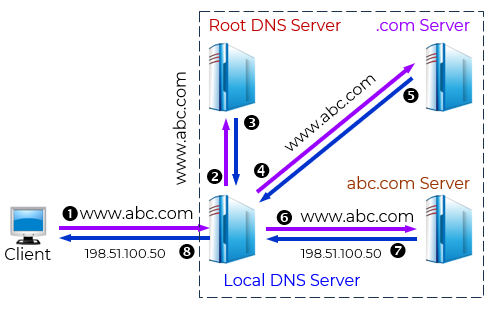
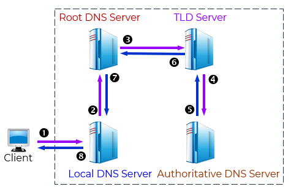
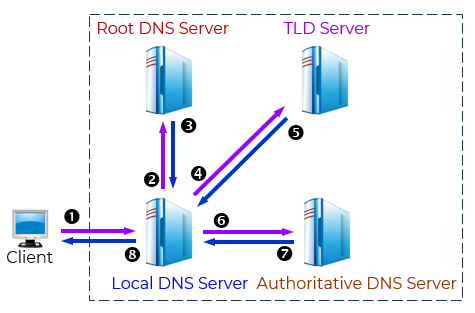
Summary & Homework
- Summary
- 统一资源定位 URL
- 域名 Domain
- 解析 Resolution
- Homework
- 整个 DNS 过程对客户端来说是“一次递归查询”；但对本地 DNS 来说，它内部用了多个迭代查询去完成任务。（）
- DNS 采用客户-服务器工作方式，客户端向 DNS 服务器发送查询请求，服务器返回对应的 IP 地址。()
- DNS 缓存机制可以显著减少查询延迟和网络流量，但可能导致域名更新后客户端仍获取旧的 IP 地址。（）
- 每次 DNS 查询都希望获得确定无误的结果，所以 DNS 采用有连接的 TCP协议。（）
- DNS 协议默认使用 UDP 端口 53 进行通信，只有在区域传输等特殊情况下才使用 TCP。（）
- DNS 查询过程中，本地域名服务器通常使用递归查询方式向根域名服务器发起请求。（）
- 有关域名服务器，说法错误的是（）。
- 在 DNS 系统中，负责管理顶级域名（如 .com、.cn）的服务器是（）。
根域名服务器顶级域名服务器（TLD）权威域名服务器本地域名服务器
- 当用户在浏览器中输入 www.example.com 时，首先被查询的 DNS 服务器通常是（）。
根域名服务器.com 顶级域名服务器用户配置的本地域名服务器example.com 的权威域名服务器
- DNS 查询中，迭代查询的特点是（）。
服务器必须返回最终答案，否则继续代为查询服务器若不知道答案，会返回一个“知道该去问谁”的服务器地址客户端直接向根服务器发起查询所有查询都通过 TCP 完成
- 翻译
DNS is a hierarchical and distributed naming system that translates domain names into IP addresses. When you type a domain name like "www.geeksforgeeks.org" into your browser, DNS ensures that the request reaches the correct server by resolving the domain to its corresponding IP address.
Without DNS, we’d have to remember the numerical IP address of every website we want to visit, which is highly impractical.
- 翻译
User Input: You enter a website address (for example, www.geeksforgeeks.org) into your web browser.
Local Cache Check: Your browser first checks its local cache to see if it has recently looked up the domain. If it finds the corresponding IP address, it uses that directly without querying external servers.
DNS Resolver Query: If the IP address isn’t in the local cache, your computer sends a request to a DNS resolver. The resolver is typically provided by your Internet Service Provider (ISP) or your network settings.
Root DNS Server: The resolver sends the request to a root DNS server. The root server doesn’t know the exact IP address for www.geeksforgeeks.org but knows which Top-Level Domain (TLD) server to query based on the domain’s extension (e.g., .org).
TLD Server: The TLD server for .org directs the resolver to the authoritative DNS server for geeksforgeeks.org.
Authoritative DNS Server: This server holds the actual DNS records for geeksforgeeks.org, including the IP address of the website’s server. It sends this IP address back to the resolver.
Final Response: The DNS resolver sends the IP address to your computer, allowing it to connect to the website’s server and load the page.
-
翻译
Root DNS Servers: These are the highest-level DNS servers and know where to find the TLD servers. They are crucial for directing DNS queries to the correct locations.
TLD Servers: These servers manage domain extensions like .com, .org, .net, .edu, .gov and others. They help route queries to the authoritative DNS servers for specific domains.
Authoritative DNS Servers: These are the servers that store the actual DNS records for domain names. They are responsible for providing the correct IP addresses that allow users to reach websites.
- 假设所有域名服务器均采用递归查询方式进行域名解析。当某台主机访问规范域名为www.abc.xyz.com的网站时，由某台域名服务器完成解析，则可能发出DNS查询的最少和最多次数分别是（）。
- 如果本地域名服务器没有缓存，采用递归方式解析某台主机域名时，用户主机、本地域名服务器发送的域名请求消息数为（）。
- Reading